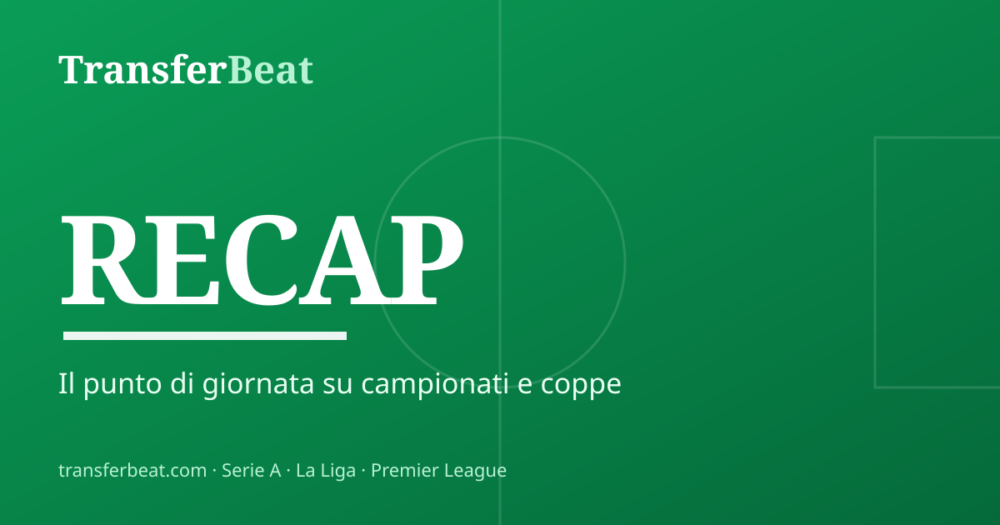

Cancelo al Barcelona y Sutalo a la Lazio: dia de oficialidades
Jueves 20 de agosto cargado de operaciones entre la Serie A, La Liga y la Premier League. Joao Cancelo es oficial en el Barcelona, la Lazio cierra a Josip Sutalo y el Milan rechaza el asalto del Galatasaray por Rafael Leao.
La noticia de apertura llega desde La Liga: Joao Cancelo es oficialmente nuevo jugador del Barcelona. Segun confirman Calciomercato.com y Gianluca Di Marzio, el lateral portugues llego como agente libre tras rescindir su contrato y ha firmado con los blaugrana hasta 2029.
Jornada intensa tambien en la Lazio. Segun Calciomercato.com ha llegado el "here we go" para Josip Sutalo: acuerdo alcanzado con el Ajax por un prestamo oneroso de 3 millones de euros con opcion de compra, fijada en 7,5 millones segun Di Marzio. Se cae en cambio la llegada de Bamba Dieng, que tras el reconocimiento medico no firmara por el club debido al resultado de las pruebas. Calciomercato.com anade que Alvaro Morata fue ofrecido a Lazio y Genoa, pero por ahora son dos vias no viables.
En el frente Milan, Di Marzio cuenta que una oferta del Galatasaray por Rafael Leao fue rechazada por los rossoneri, con el portugues valorado en 60 millones de euros. El Milan tambien ha alcanzado un acuerdo de principio con el Como por Samuele Ricci, en prestamo con opcion de compra, y ha cerrado la llegada de Diego Moreira desde el Estrasburgo. En el Inter, de nuevo segun Di Marzio, los nerazzurri y el Liverpool han llegado a un acuerdo por Curtis Jones sobre la base de un contrato de cinco anos por 3,5 millones netos; el Barcelona, en cambio, no ha presentado ninguna oferta por Lautaro Martinez, considerado intransferible.
Tambien hubo movimientos en el resto de la Serie A. El Como esta cerrando a Willy Kambwala, defensa central nacido en 2004 del Villarreal (Calciomercato.com). El Bologna ha oficializado la renovacion de Riccardo Orsolini hasta 2031 y negocia de forma avanzada por Nathan Gassama, defensa del Baltika. El Napoli, informa Di Marzio, ha definido la llegada de Favasuli desde el Catanzaro en prestamo de 1 millon y para el ataque valora tambien a Zirkzee y Jackson ademas de Gabriel Jesus. La Fiorentina, por su parte, trabaja en Ernest Poku del Bayer Leverkusen.
La Roma, segun Calciomercato.com, ha decidido centrarse en otros objetivos, enfriando el interes por Cacciamani y Fofana, mientras que Di Marzio da por finalizada la llegada de Rodrigo Mora desde el Porto. En el extranjero, el Besiktas ha presentado una doble oferta por Fares Ghedjemis del Frosinone (12 millones mas bonus).
En el mercado internacional destacan las oficialidades recogidas por Di Marzio: Tijjani Reijnders ha fichado por el Al Qadsiah por 51 millones de libras, mientras que el Aston Villa ha confirmado los fichajes de Matteo Ruggeri desde el Atletico de Madrid por 21,4 millones de libras y de Zion Suzuki desde el Parma.
TransferBeat agrega noticias de fútbol citando las fuentes originales. Noticia en desarrollo.